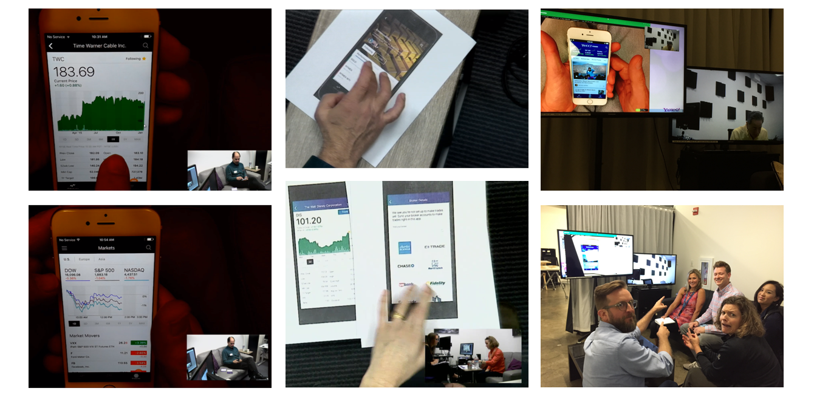
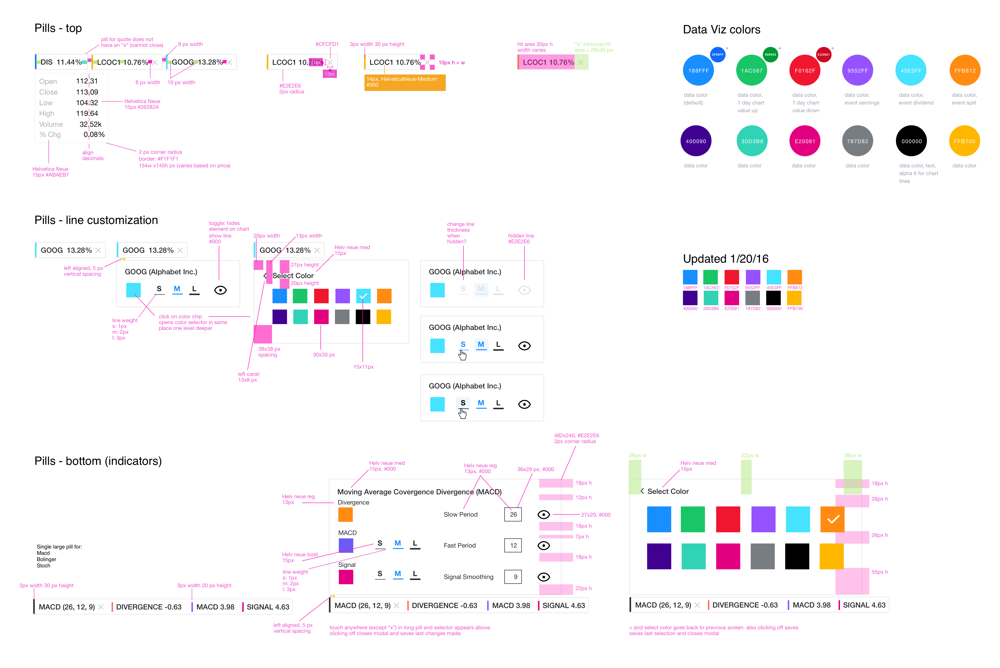
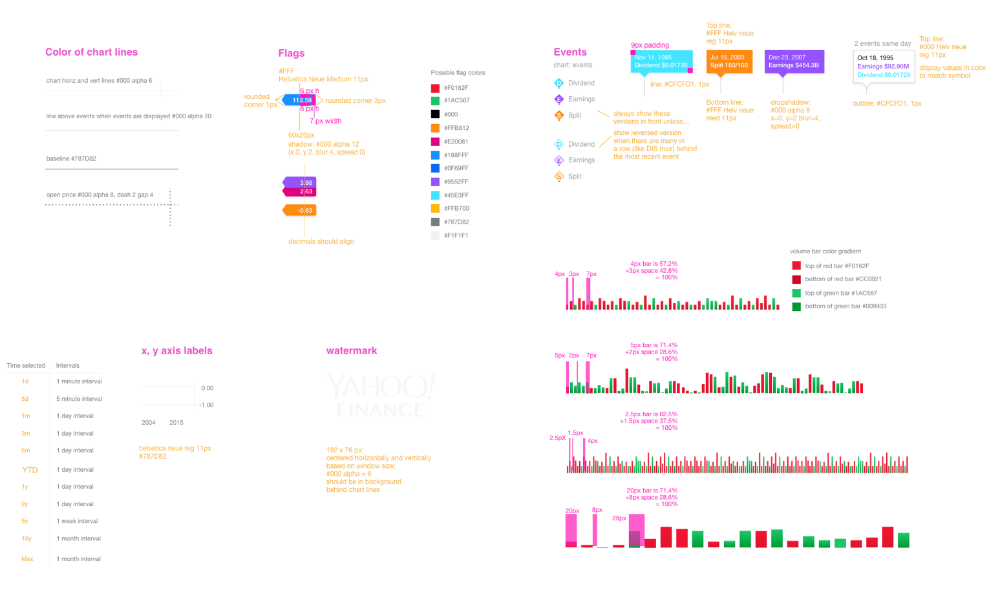
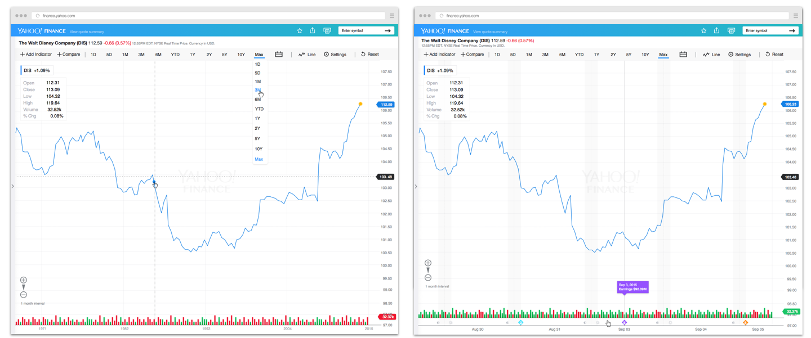
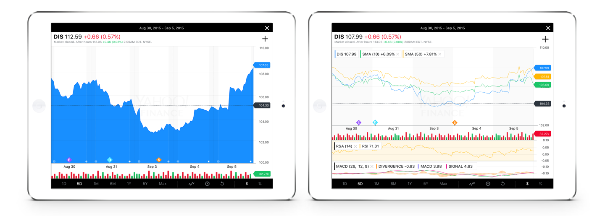

Yahoo Finance is one of the most visited financial sites on the web with over 5 million visitors (DAUs + MAUs) each day. I lead the charts redesign with new features for both desktop responsive web and mobile apps.
PROTOTYPE: New Finance fullscreen chart features
Process
- Team of 12 engineers, 3 product managers, 3 designers, 1 QE
- My role: Lead designer of all full-screen interactive finance charts on desktop, iOS and Android
- I joined the team as design and UER were conducting user research of the new design direction with new watchlist functionality
- Collected user feedback about navigation, expected behaviors with watchlists, charts UX and like-to-have features
- The charts in the app were well received but limited functionality was noted
- Chart functionality priorities were revisited
- Findings informed the process of integrating desktop chart functionality such as adding indicators, showing after hours data, adding company events (like splits, dividends and earnings) and customizing settings
- Simultaneously designed screens and flows for desktop and mobile apps
- Had daily check-ins with design, product and engineers throughout process to ensure priorities and deliverables were on schedule
- Presented design to engineers to identify any issues before providing specs
- Provided design QE feedback of stage environments
- Planned for post-launch user testing for feedback of feature discoverability and clairty of navigation
- Continue with design of V2 features
PROTOTYPE: Making financial trades on Yahoo
Process
- Researched apps like Robinhood and Stash to compare onboarding and trading features
- Looked at desktop financial trading experiences such as MarketWatch, Bloomberg, FinViz, Schwab, etrade and other broker sites to compare presentation of ticker related news and required fields for making trades
- Presented initial minimum level of input
- Refined designs for integration into app design
- Created protoype to test discoverability and hierarchy of information
- Presented digital and paper prototypes in user testing to gauge interest and to learn about any concerns with trading (e.g. security)
- Revisited designs based on feedback
- Met with product and engineers for final signoff
- Provided design specs to engineers
- QE feedback and bug filing from stage environments
Mobile trading usability testing

Trading concept sketches prior to design and protoype
Specs for toolbar, date picker and dropdowns


Consistent chart designs across platforms
Finance fullscreen interactive desktop charts

Finance mobile app interactive charts

Finance Apple Watch screens